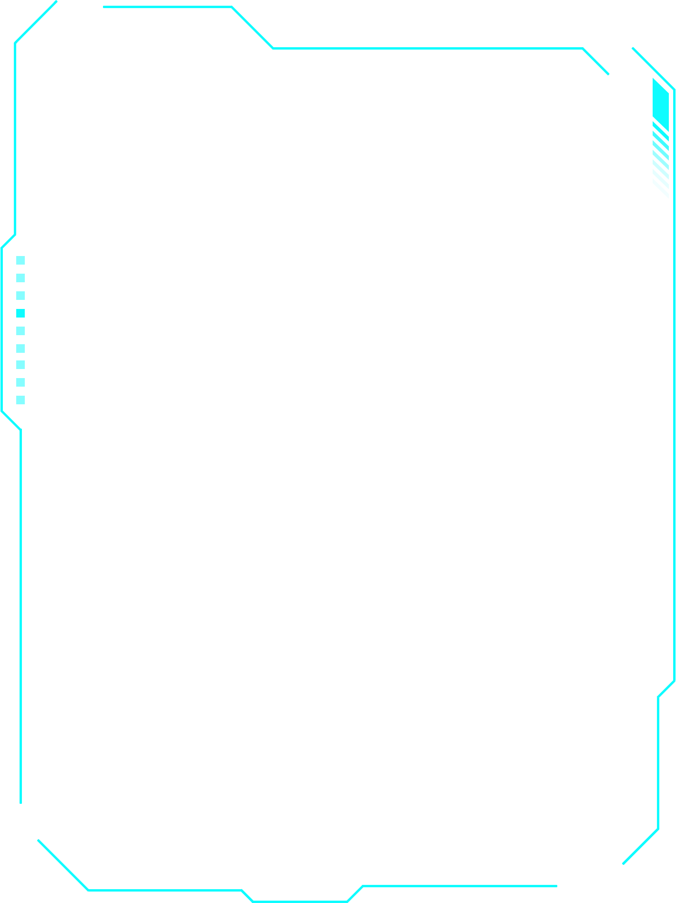

测试站点

站点环境
站点环境
站点详情
- 站点名称：
- 站点地址：
- 站点经度：
- 站点纬度：
- 站点类型：
- 运维人员：
- 联系电话：
- 站点编号：
<
气象信息
温度：19℃
湿度：52%
风向：东南风
风速：2m/s
降雨量：0mm
蒸发量：0.326mm/h
气压：0.326MPa

设备监控
- 设备监控 1
操作

当前电池信息

数据日志
| u78 | 流量数据 | 163.28 | 2020年12月20日 |
| 006 | 水量数据 | 130.67 | 2020年12月21日 |
| s07 | 天气数据 | 163.28 | 2020年12月22日 |
| 872 | 监视器数据 | 130.67 | 2020年12月23日 |
| d59 | 土壤仪数据 | 163.28 | 2020年12月24日 |
| 299 | 灌溉阀数据 | 130.67 | 2020年12月24日 |
| 256 | 传感器数据 | 163.28 | 2020年12月23日 |
| 026 | 环境数据 | 130.67 | 2020年12月22日 |
| 037 | 传感器数据 | 163.28 | 2020年12月25日 |